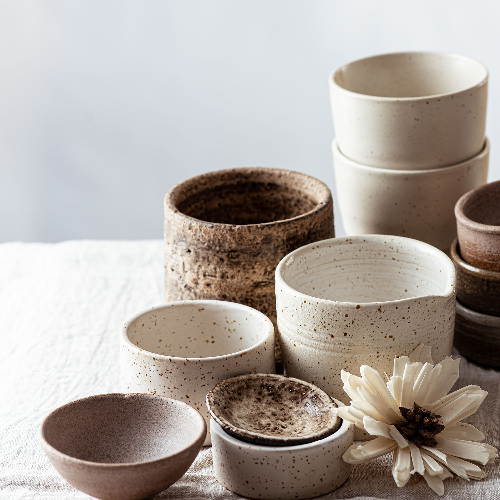

私たちについて

うつわ屋こはるが大切にしていること
うつわ屋こはるは、熟練の職人によって手作りされた高品質な陶器のみを取り扱っています。素材の選定から仕上げまで、一切の妥協を許しません。美しさだけでなく、日常使いにも適した耐久性と実用性を兼ね備えた製品を提供します。
環境に優しい素材を使用し、製造工程でもエコフレンドリーな方法を採用しています。シンプルで時代を超えて愛されるデザインを追求し、長く使っていただける製品をお届けします。

うつわ屋こはるは、熟練の職人によって手作りされた高品質な陶器のみを取り扱っています。素材の選定から仕上げまで、一切の妥協を許しません。美しさだけでなく、日常使いにも適した耐久性と実用性を兼ね備えた製品を提供します。
環境に優しい素材を使用し、製造工程でもエコフレンドリーな方法を採用しています。シンプルで時代を超えて愛されるデザインを追求し、長く使っていただける製品をお届けします。